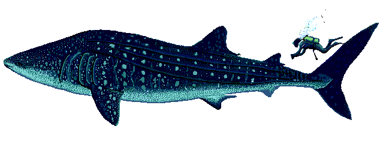
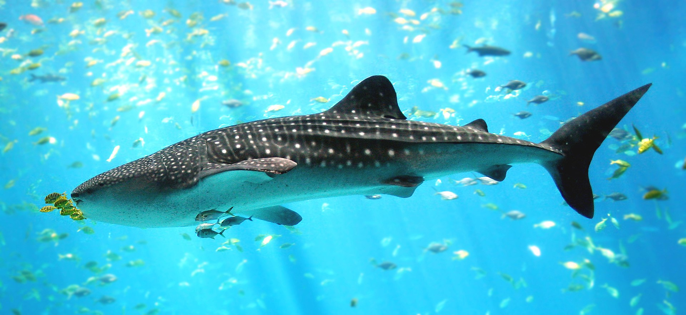

Cá mập voi

Cá mập voi là gì
Cá nhám voi hay cá mập voi (danh pháp hai phần: Rhincodon typus) là
một thành viên đặc biệt trong phân lớp Elasmobranchii (cá mập, cá đuối) của lớp Cá sụn
(Chondrichthyes). Nó là loài cá mập lớn nhất và cũng là loài cá hiện còn sống có kích thước lớn
nhất thế giới.

Cá mập voi ăn gì
Các nhám voi ăn các loại sinh vật phù du, tảo lớn, nhuyễn thể hay
các loại mực và động vật có xương sống nhỏ. Các răng nhỏ li ti không giúp ích gì cho quá trình
ăn uống của nó, thay vì thế nó hút nước chứa các sinh vật phù du vào qua miệng và đi qua mang
lược (có chức năng giữ lại thức ăn) và sau đó bị tống ra khỏi bằng mang cung. Những gì mắc lại
tại mang lược được nó nuốt hết. Cá nhám voi có thể luân chuyển nước với tốc độ tới 1,7 l/s (3,5
panh (pint) Hoa Kỳ/s).